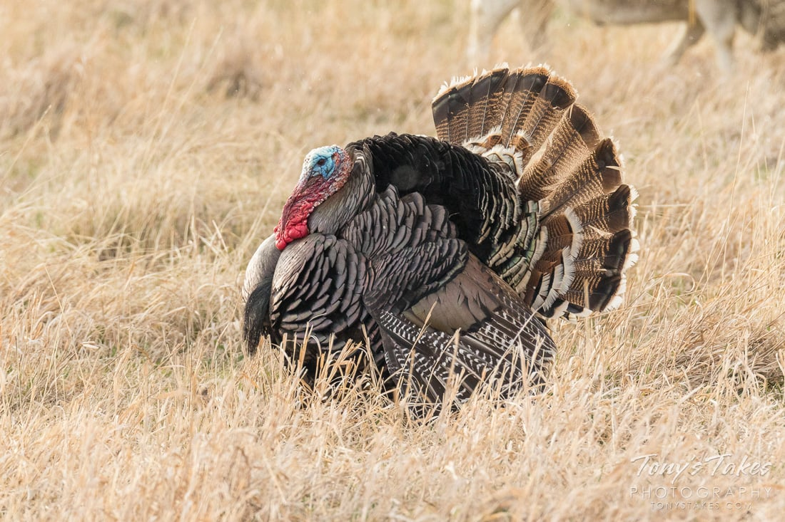

Roosting
Roosting in trees at night is another essential survival mechanism. Since most of their predators are land-dwelling, turkeys seek refuge in high branches, where they are less vulnerable to attacks. They fly up at dusk and descend at dawn, using strong legs and wings to propel themselves upward. In addition to their physical adaptations, turkeys also rely on vocal communication to warn each other of danger. They produce a variety of calls, from sharp alarm clucks to low purrs, to signal the presence of predators or coordinate movement within their flocks.
The Biology and Behavior of Turkeys
Turkeys are fascinating birds that belong to the Phasianidae family, which also includes pheasants, quails, and partridges. The most well-known species is the wild turkey (Meleagris gallopavo), which is native to North America. These birds have strong, muscular bodies covered in iridescent feathers that shimmer in shades of bronze, gold, green, and copper. They have a distinctive, bald head with a fleshy, bumpy texture, which can change color based on their mood, often shifting between blue, red, and white. Male turkeys, known as toms or gobblers, are significantly larger than females, or hens, and are famous for their elaborate courtship displays. They fan out their impressive tail feathers, puff up their bodies, and emit a deep, resonant gobble to attract mates. Hens, on the other hand, are smaller and more camouflaged in color, which helps them blend into their surroundings when nesting.
Turkeys in Agriculture and Conservation
Turkeys play a significant role in agriculture, particularly in the poultry industry, where they are raised for meat production. Domesticated turkeys, which have been selectively bred for their size and meat yield, differ greatly from their wild counterparts. Most domestic turkeys have white feathers, as this makes processing easier and prevents dark pinfeathers from affecting the appearance of the meat. Due to selective breeding, many farm-raised turkeys grow much larger than wild turkeys, sometimes weighing over 40 pounds. Because of this excessive weight, domesticated turkeys have largely lost their ability to fly. The United States is the largest producer of turkey meat, with millions of birds raised each year for food, particularly around holidays such as Thanksgiving and Christmas. Turkey meat is valued for its high protein content and low fat, making it a popular choice for health-conscious consumers. However, modern turkey farming has also raised concerns about animal welfare and environmental sustainability, leading some farmers to adopt more humane and eco-friendly practices, such as free-range and organic turkey farming.
Facts:
- Male turkeys are called toms, while female turkeys are called hens and baby turkeys are called poults.
- Turkeys are large.
- Turkeys have excellent eyesight, which is about three times better than human vision and allows them to detect movement from far away.
- Turkeys don't have teeth.